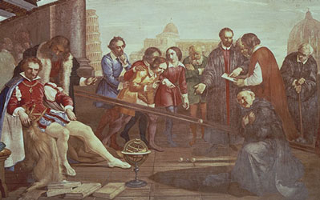
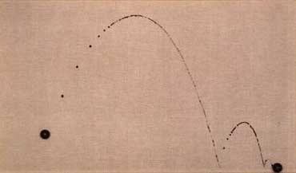

mechanism
mechanism  radical
art homepage
radical
art homepage
to roll
[experiments with rolling balls]
 |
Galilieo's experiments with balls rolling down an inclined plane (early 17th century).
[Painting by Giuseppe Bezzuoli, 1841.] |
|
Demo-device by Jan van Musschenbroek (early 18th century).
A ball released on the top of the slope on the right will roll down and be launched into a parabolic flight trajectory through four brass rings mounted on the left.
[Item kept in the Boerhaave Museum, Leyden. Described in: Willem Jacob 's Gravesande: Physices elementa mathematica, experimentis confirmata, sive introductio ad philosophiam Newtonianam. Leyden, 1720–1721.] |
 |
Tom Shannon: Bell Ball (Trajectory Series), 1988.
Automatic painting: Tossed wet paint ball rolls and bounces on inclined plane. |
|
|